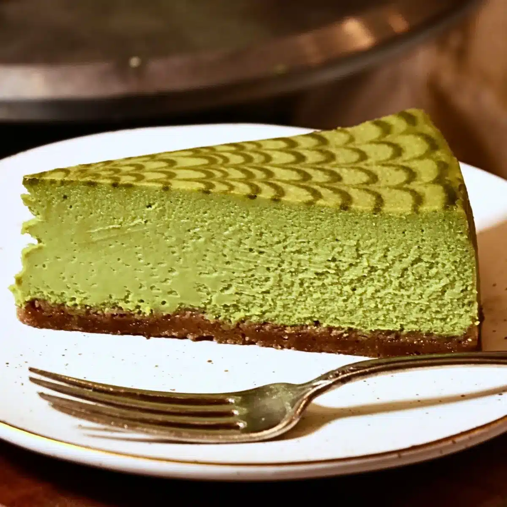
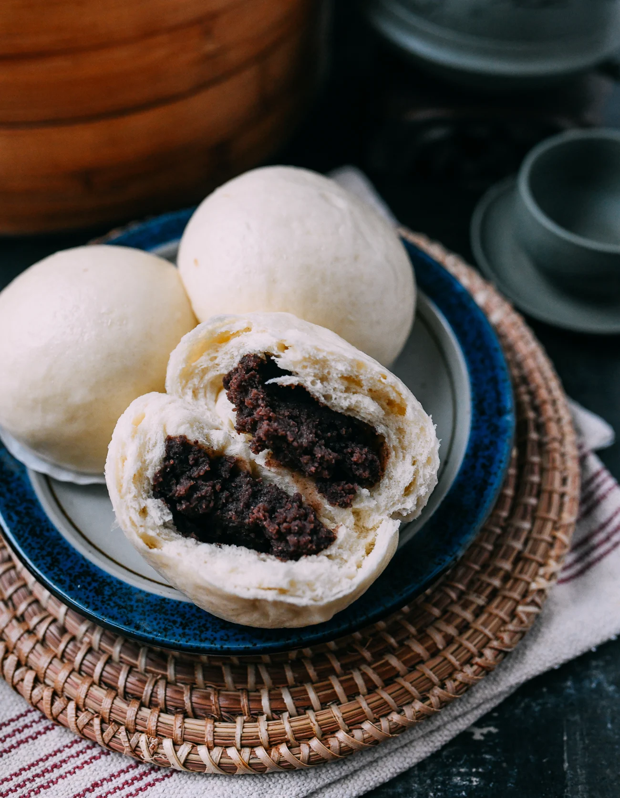
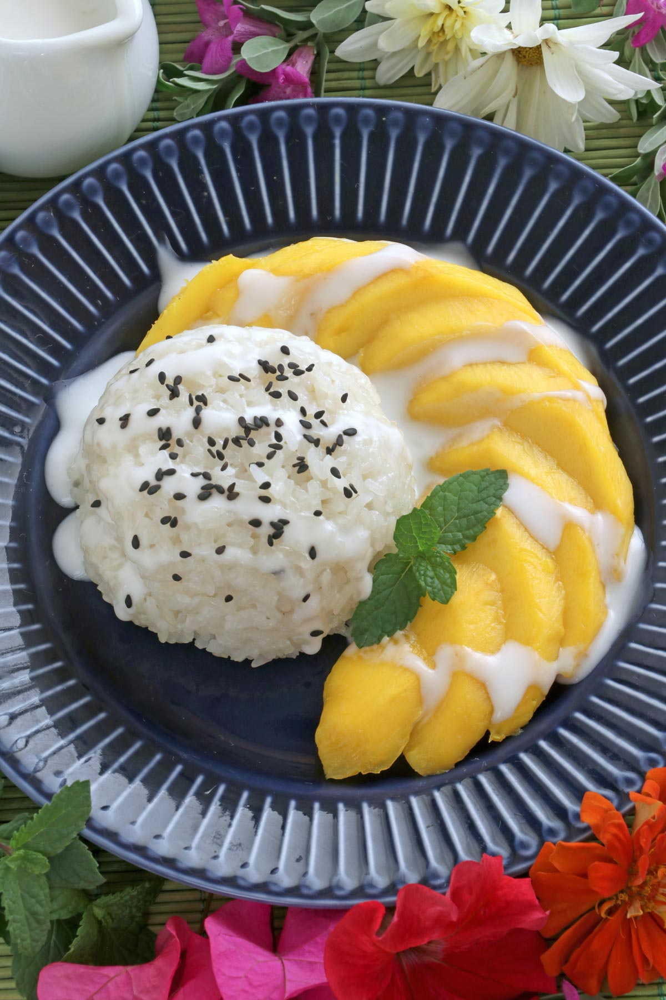
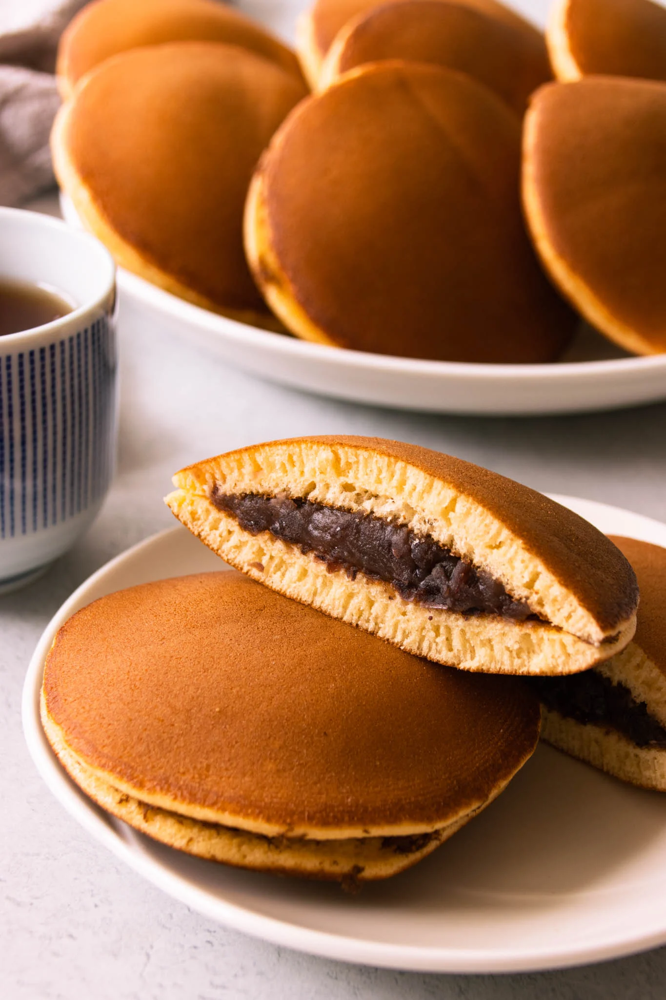
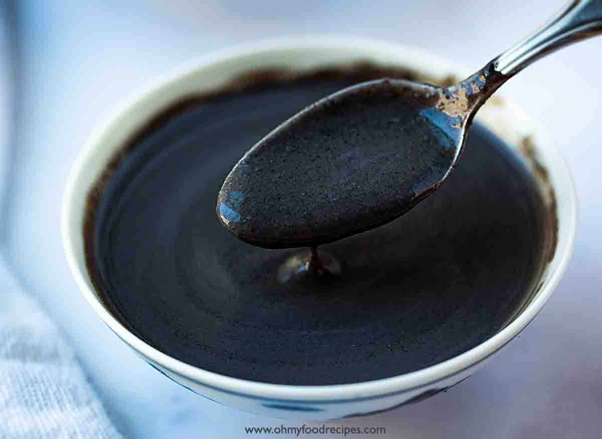
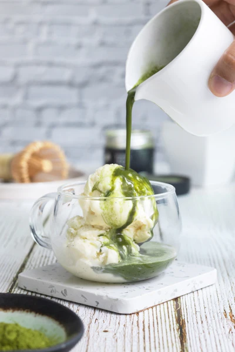

Ten sweet finales—mochi to mango rice—with flavor notes and steps that work in a home kitchen.
Mochi ice cream

Chewy, slightly sweet rice dough around cold ice cream—playful texture and clean sweetness.
How to make it
- Mix glutinous rice flour, sugar, and water; microwave or steam until a smooth, stretchy dough forms.
- Dust heavily with cornstarch or potato starch; knead briefly.
- Scoop small ice cream balls; freeze rock-solid on parchment.
- Wrap each in a thin layer of mochi; freeze again 20–30 minutes before serving.
No-bake matcha cheesecake

Earthy matcha against creamy cheese and a buttery base—slightly bitter and very smooth.
How to make it
- Press crushed cookies mixed with melted butter into a pan; chill.
- Beat cream cheese, sugar, and sifted matcha; fold in whipped cream.
- Pour over crust; smooth the top.
- Refrigerate several hours or overnight before slicing.
Red bean paste buns (simplified)

Fluffy bread with earthy-sweet adzuki filling—comforting and not overly sugary.
How to make it
- Use store-bought sweet red bean paste for the filling.
- Make a soft enriched dough; proof until doubled.
- Portion dough, wrap around paste balls, and pinch seams closed.
- Proof again; steam 12–15 minutes or bake until golden if you prefer baked buns.
Mango sticky rice

Coconut-creamy rice with ripe mango—tropical, floral, and rich without feeling heavy.
How to make it
- Soak glutinous rice; steam until tender.
- Heat coconut milk with sugar and salt; pour most over the rice and let absorb.
- Slice fresh mango alongside.
- Drizzle reserved thickened coconut sauce and sprinkle toasted mung beans or sesame if you like.
Dorayaki

Soft honeyed pancakes sandwiching sweet bean paste—nostalgic and snack-sized.
How to make it
- Whisk eggs, sugar, honey, water, and flour into a smooth batter; rest 15 minutes.
- Cook small rounds on low heat until bubbles form; flip once.
- Cool pairs of pancakes; spread red bean paste on one half.
- Sandwich and wrap edges gently.
Black sesame sweet soup

Toasty, nutty sesame with gentle sweetness—warming and aromatic.
How to make it
- Toast black sesame seeds until fragrant; cool.
- Blend with water and rice into a fine slurry.
- Simmer with rock sugar until thickened; stir often.
- Serve warm; optional glutinous rice balls on the side.
Taiyaki (filled pancakes)

Crisp outside, tender inside, with sweet filling—custard or red bean both work.
How to make it
- Mix pancake-style batter (flour, egg, milk, sugar, baking powder).
- Preheat a taiyaki iron; brush with oil.
- Fill molds partway, add filling, cover with more batter; close and cook until golden.
- Cool slightly before eating—filling is very hot.
Hong Kong egg tarts

Buttery flaky crust with silky, lightly sweet custard—delicate and rich in small bites.
How to make it
- Line tart molds with puff or shortcrust pastry; chill.
- Whisk eggs with hot sugar syrup and evaporated milk; strain twice for smoothness.
- Fill shells 80%; bake at moderate heat until custard just sets with a slight jiggle.
- Cool in the pan briefly before unmolding.
Shaved ice halo-halo style

Cold, creamy, and playful—jackfruit, beans, jellies, and ube in every spoonful.
How to make it
- Layer sweet beans, coconut jellies, jackfruit, and kaong in a tall glass.
- Add shaved ice; pour evaporated milk.
- Top with leche flan chunk and ube halaya.
- Stir well before eating to mix textures.
Green tea affogato

Bitter matcha meets vanilla ice cream—hot meets cold in one simple dessert.
How to make it
- Whisk high-quality matcha with hot water until frothy and smooth.
- Scoop vanilla or coconut ice cream into small bowls or cups.
- Pour matcha over the ice cream at the table.
- Eat immediately while textures contrast.